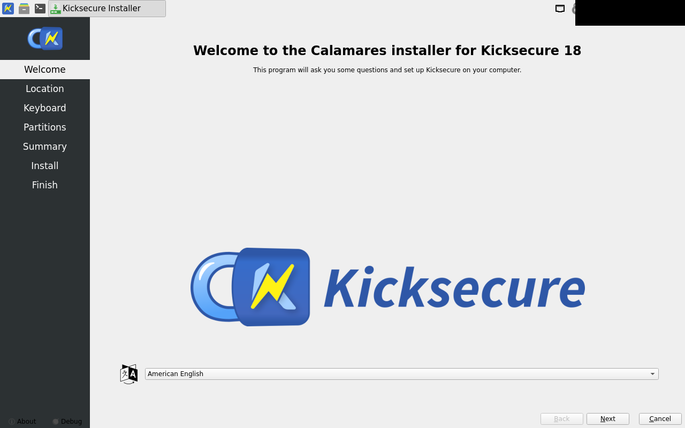
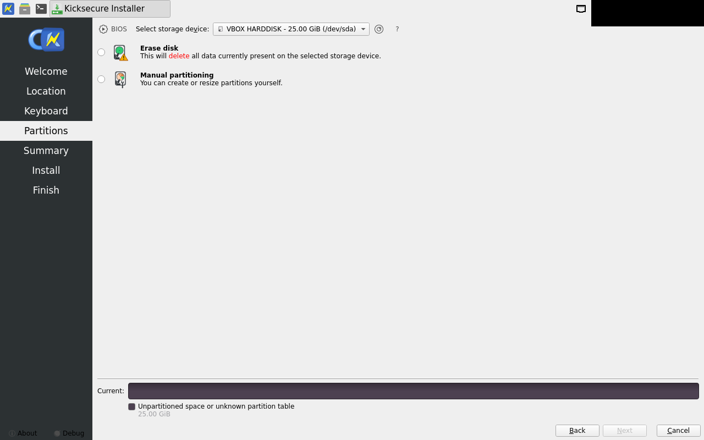
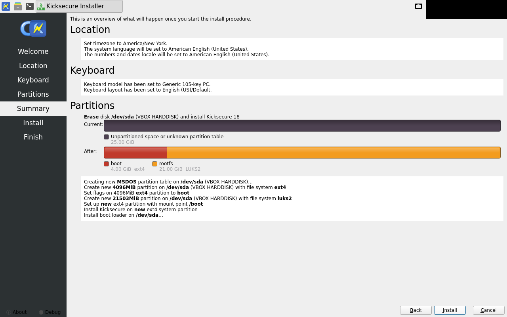
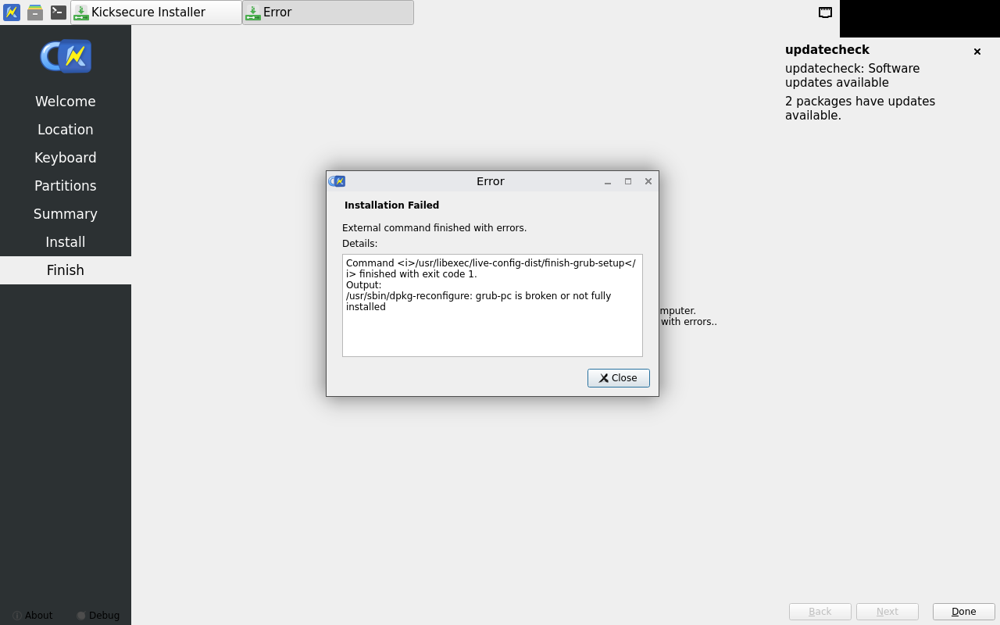

calamares-install fail
exit 5
oader" ( 18 / 30 )
/usr/lib/x86_64-linux-gnu/calamares/modules/bootloader/main.py:392: SyntaxWarning: invalid escape sequence '\$'
prefix, generator_name = re.match("(.*)\${([^}]*)}$", name).groups()
[PYTHON JOB]: Found gettext "en_US" in "/usr/share/locale/en_US"
[PYTHON JOB]: "Bootloader: grub (bios)"
.. Running QList("grub-install", "--target=i386-pc", "--recheck", "--force", "/dev/sda")
.. Running QList("grub-mkconfig", "-o", "/boot/grub/grub.cfg")
06:46:46 [6]: virtual void Calamares::JobThread::run()
Starting job "Running shell processes…" ( 19 / 30 )
.. Running QList("/bin/sh", "-c", "/usr/libexec/live-config-dist/fixkblayout-part1 /tmp/calamares-root-e6phwj_9")
06:46:46 [6]: virtual void Calamares::JobThread::run()
Starting job "Running shell processes…" ( 20 / 30 )
.. Running QList("/bin/sh", "-c", "/usr/libexec/live-config-dist/fixkblayout-part2")
06:46:48 [6]: virtual void Calamares::JobThread::run()
Starting job "grubcfg" ( 21 / 30 )
[PYTHON JOB]: Found gettext "en_US" in "/usr/share/locale/en_US"
.. Running QList("sh", "-c", "which dracut")
.. Running QList("sh", "-c", "which plymouth")
.. Target cmd: QList("sh", "-c", "which plymouth") Exit code: 1 (no output)
.. Running QList("sh", "-c", "grep -q \"^HOOKS.*systemd\" /etc/mkinitcpio.conf")
.. Target cmd: QList("sh", "-c", "grep -q \"^HOOKS.*systemd\" /etc/mkinitcpio.conf") Exit code: 2 output:
grep: /etc/mkinitcpio.conf: No such file or directory
06:46:48 [6]: virtual void Calamares::JobThread::run()
Starting job "Configuring LUKS key file." ( 22 / 30 )
06:46:48 [6]: virtual Calamares::JobResult LuksBootKeyFileJob::exec()
There are 1 LUKS partitions
.. root "/dev/sda2" passphrase? true
.. /boot partition is not encrypted, skipping keyfile creation.
06:46:48 [6]: virtual void Calamares::JobThread::run()
Starting job "Writing LUKS configuration for Dracut to /etc/dracut.conf.d/calamares-luks.conf…" ( 23 / 30 )
06:46:48 [6]: virtual Calamares::JobResult DracutLuksCfgJob::exec()
[DRACUTLUKSCFG]: Writing "/tmp/calamares-root-e6phwj_9/etc/dracut.conf.d/calamares-luks.conf"
06:46:48 [6]: virtual Calamares::JobResult DracutLuksCfgJob::exec()
[DRACUTLUKSCFG]: Wrote config to "/tmp/calamares-root-e6phwj_9/etc/dracut.conf.d/calamares-luks.conf"
06:46:48 [6]: virtual void Calamares::JobThread::run()
Starting job "Running shell processes…" ( 24 / 30 )
.. Running QList("/bin/sh", "-c", "/usr/libexec/live-config-dist/finish-grub-setup")
.. Target cmd: QList("/bin/sh", "-c", "/usr/libexec/live-config-dist/finish-grub-setup") Exit code: 1 output:
/usr/sbin/dpkg-reconfigure: grub-pc is broken or not fully installed
06:46:48 [6]: virtual void Calamares::JobThread::run()
Skipping non-emergency job "Running shell processes…"
.. Skipping non-emergency job "packages"
.. Skipping non-emergency job "Running shell processes…"
.. Skipping non-emergency job "dracut"
.. Skipping non-emergency job "Unmounting file systems…"
.. Skipping non-emergency job "Running shell processes…"
06:46:48 [1]: void Calamares::ViewManager::onInstallationFailed(const QString&, const QString&)
ERROR: Installation failed: "External command finished with errors."
.. - message: "External command finished with errors."
.. - details: Command <i>/usr/libexec/live-config-dist/finish-grub-setup</i> finished with exit code 1.
Output:
/usr/sbin/dpkg-reconfigure: grub-pc is broken or not fully installed
06:46:48 [6]: void Calamares::ViewManager::onInstallationFailed(const QString&, const QString&)
Calamares will quit when the dialog closes.
06:46:48 [6]: void Calamares::callQmlFunction(QQuickItem*, const char*)
QML "onLeave()" is missing.
06:46:48 [6]: void Config::doNotify(bool, bool)
Notification not sent; completion: failed
06:46:48 [6]: void {anonymous}::PowerManagementInterface::uninhibitSleep()
Sleep was never inhibited.
fail content: UNVALIDATED (no golden) welcome (live / pre-install)

fail content: UNVALIDATED (no golden) partitions (live / pre-install)

fail content: UNVALIDATED (no golden) summary

fail content: UNVALIDATED (no golden) failure
